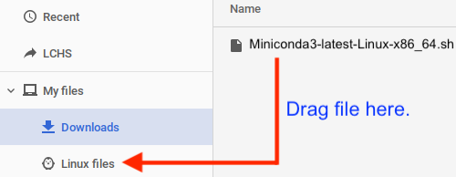

Installing Python¶
Note
Before starting the Python installation, make sure you have finished setting up the terminal and Visual Studio Code applications on your machine.
Follow the instructions below to install the latest version of Python:
Windows Users¶
Visit python.org and hover over the Downloads menu. You should see a button to download Python for Windows. Click the button.
After the installer finishes downloading, run it.
On the first settings panel, check the box for Add Python to PATH. Then select the Install Now option.
Click through the remaining panels and accept the default choices. Once the install is complete, you will be presented with one final settings page. Be sure to select Disable PATH limit length.
{kind=link}
{kind=link}
Mac Users¶
- Visit python.org and hover over the Downloads menu. You should see a button to download Python for Mac OS X. Click the button.
- After the installer finishes downloading, run it.
- During the installation, accept all of the default options.
Chromebook Users¶
Warning
If you use a virtual desktop for your programming course, do NOT install VS Code on your device. Use the login information your teacher gave you to access the application.
Visit the Miniconda download page and select the Linux installer for the most recent version of Python.
IMPORTANT: Locate the installation package in the Downloads folder. Drag it into the Linux files folder.
Launch the Terminal application, or open a new terminal panel in VS Code.
Use the following set of commands to start the installation:
$ pwd /home/your_username $ ls Miniconda3-latest-Linux-x86_64.sh $ sudo bash Miniconda3-latest-Linux-x86_64.sh
Note
The actual Miniconda file name may be different depending on version updates.
During installation, you will be asked several questions:
View and then accept the license terms (
yes).When asked for the installation location, use
/opt/miniconda3instead of the default.Miniconda 3 will now be installed into this location /root/miniconda3 - Press ENTER to confirm - Press CTRL-C to abort - Or specify a different location below [/root/miniconda3] >>> /opt/miniconda3
Finally, enter
yeswhen asked to initialize Miniconda3.
Close and reopen the terminal.
To run Python code, you must activate Miniconda in the terminal with the command
source /opt/miniconda3/bin/activate. This will give you access to all of the features and modules installed with the language.username:~ $ source /opt/miniconda3/bin/activate. (base) username:~ $ python --version Python 3.8.3
{kind=link}